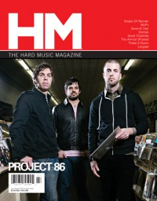

Project 86
 |
| November 1999 HM |
 |
| January 2001 HM |
 |
| July 2007 HM |
 |
| November 2014 HM |
Media coverage:
- Sep 1998 in HM "project eighty six", by Tim Owen
- Sep 1999 in HM "Concert Review: P.O.D., Blindside, Project 86", by Gordon (a girl called)
- Nov 1999 in HM "Project 86", by Treble Bandoppler
- Mar 2000 in CCM "Talent Pool: A Big Man's Shoes", by David Drury
- May 2000 in 7ball "Hard and Fast", by Jason E Dodd
- Jul 2000 in HM "Poster: Project 86"
- Jan 2001 in HM "Crossing The Atlantic", by Jason E Dodd
- Spr 2001 in Loud Times "PROJECT PR86ECT", by David A. Jenison
- May 2001 in Campus Life "Crank It Up!", by Chris Lutes
- Mar 2004 in HM "Project 86", by Doug Van Pelt
- Jul 2004 in Relevant "Project 86 Takes Control", by Chad Bonham
- Sep 2005 in HM "Disciple Interviews Project 86"
- Dec 2005 in CCM "Subject To Change", by Steven Douglas Losey
- May 2006 in HM "As Seen Through The Eyes of Andrew Schwab...", by Andrew Schwab
- May 2006 in HM "Poster: Project 86"
- Sep 2006 in CCM "Standing Room Only: Smile, It's The End of the World Tour", by Andy Argyrakis
- Jul 2007 in HM "A Conversation With Andrew Schwab... With Footnotes", by David Stagg
- Jul 2007 in CCM "Rival Bid", by Brian Quincy Newcomb
- Jan 2008 in CCM "Trend Watch: Virtual Reality", by Beau Black
- Jul 2009 in HM "So & So Says....: Project 86", by Andrew Schwab
- May 2012 in HM "Poster: Andrew Schwab (Project 86)"
- May 2012 in HM "Project 86", by Kim Flanders
- Jul 2012 in HM "Hardnews: Quick & Concise: Project 86 Album to Drop"
- Nov 2014 in HM "Future Echoes", by Jordan Gonzales, David Stagg
Albums & reviews:
1998: Project 86
2008: This Time Of Year EP
2009: Picket Fence Cartel
- Jul 1998 in 7ball, by Dan MacIntosh
- Jul 1998 in HM, by Brian Vincent McGovern
- Aug 1998 in CBA Marketplace, by Todd Hafer
- Sep 1998 in YouthWorker, by George Palmer
- Mar 2000 in CCM, by Lou Carlozo
- May 2000 in HM, by David Bixler
- May 2000 in YouthWorker, by Dave Urbanski
- Spr 2001 in Loud Times
- Nov 2002 in HM, by Doug Van Pelt
- Nov 2002 in YouthWorker, by Dave Urbanski
- Jan 2003 in CCM, by Brian Quincy Newcomb
- Mar 2003 in 7ball, by Anthony DeBarros
- Dec 2003 in Nor'Easter, by Chris Gatto
- Mar 2004 in HM, by Chris Francz
- Jul 2004 in CCM, by Andy Argyrakis
- Sep 2004 in YouthWorker, by Dave Urbanski
- 2005 in Christian Guitarist & Bassist, by Bill Vande Giessen
- Nov 2005 in HM, by Austin Powell
- Nov 2005 in Relevant, by Brett McCracken
- Nov 2005 in CCM, by Doug Van Pelt
- Jan 2006 in YouthWorker, by Rich Campbell
- Jul 2007 in YouthWorker
- Jul 2007 in CCM, by Tony Shore
- Jul 2007 in HM, by Doug Van Pelt
- Sep 2007 in Relevant, by John Brandon
2008: This Time Of Year EP
2009: Picket Fence Cartel
- Jul 2009 in HM, by Chad Olson
- Jun 2010 in Heaven's Metal, by Jeff McCormack
- Aug 2012 in HM, by Dan MacIntosh
- Nov 2012 in CCM Digital, by Andy Argyrakis
- Dec 2014 in HM, by Sean Huncherick
Award Summary (Nominations / Wins)
Dove Awards- 1999 Dove Awards
- Hard Music Album: Project 86
- Hard Music Album: Drawing Black Lines
- Hard Music Recorded Song: "One-Armed Man (Play On)"
- Hard Music Album: Truthless Heroes
- Recorded Music Packaging: Rival Factions
Books about Project 86
- "Project 86" in The Encyclopedia of Contemporary Christian Music (Mark Allan Powell, 2002)

© 2011 CMnexus. Last updated September 2019. Contact: editor -AT- cmnexus -DØT- org About